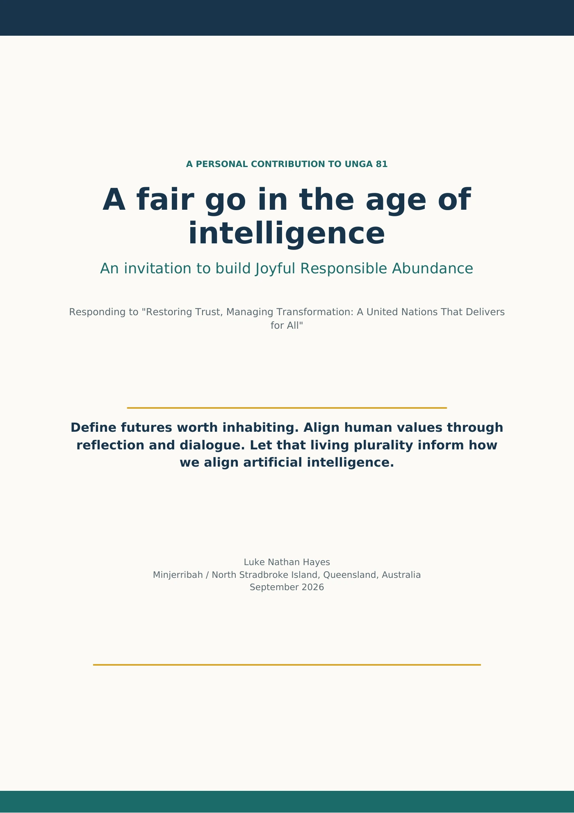
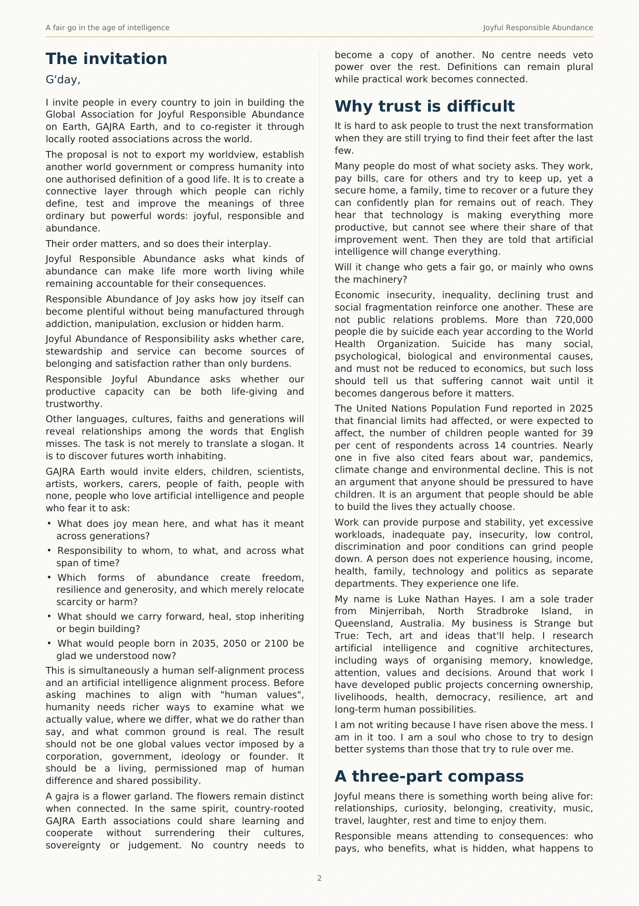
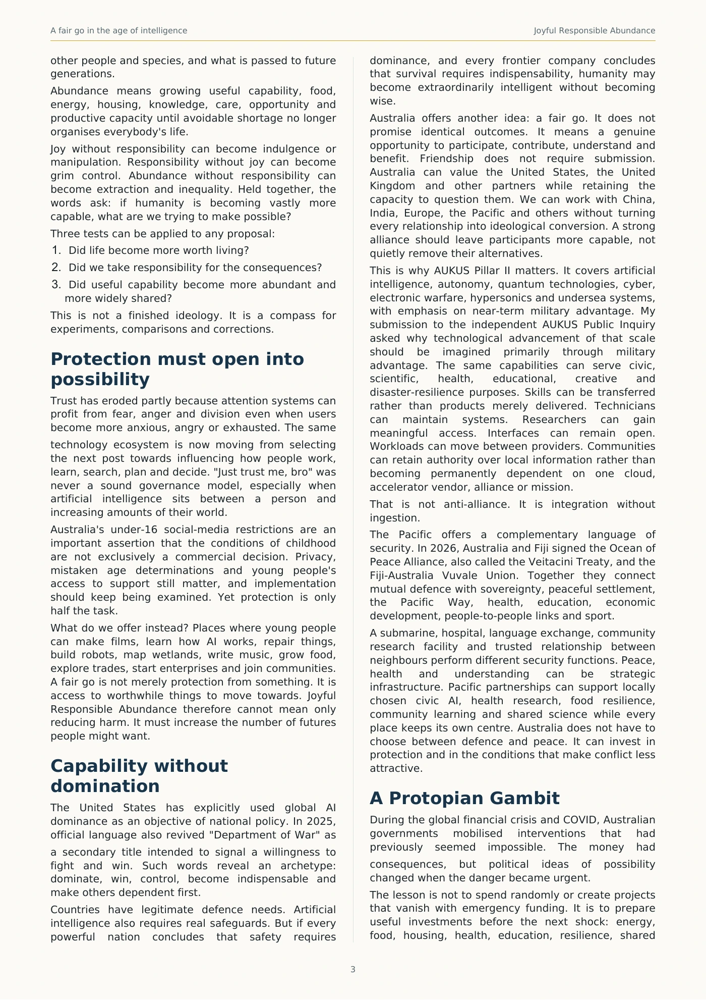
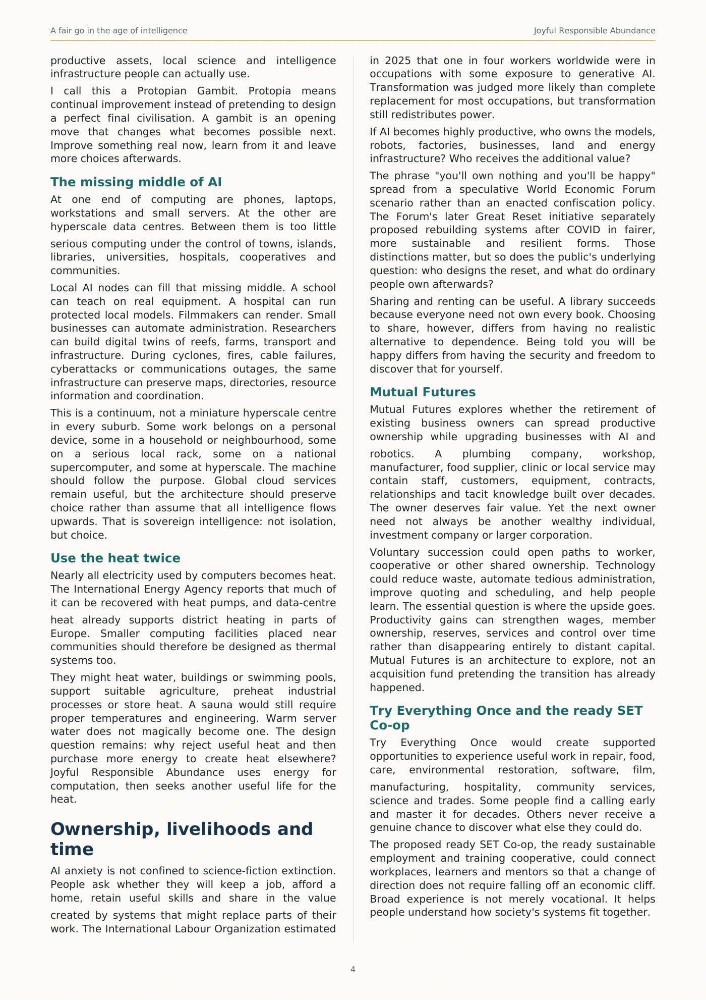
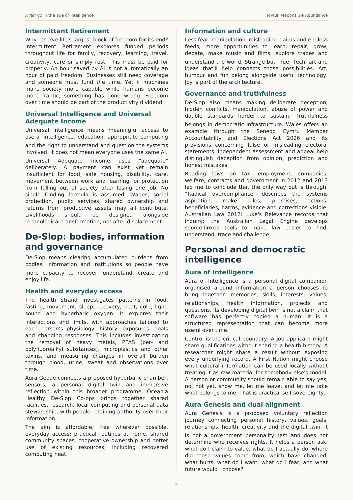
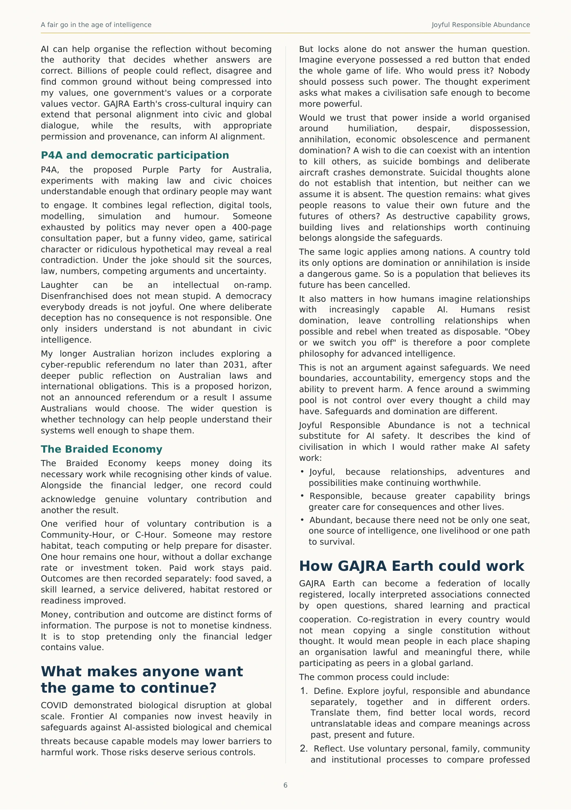
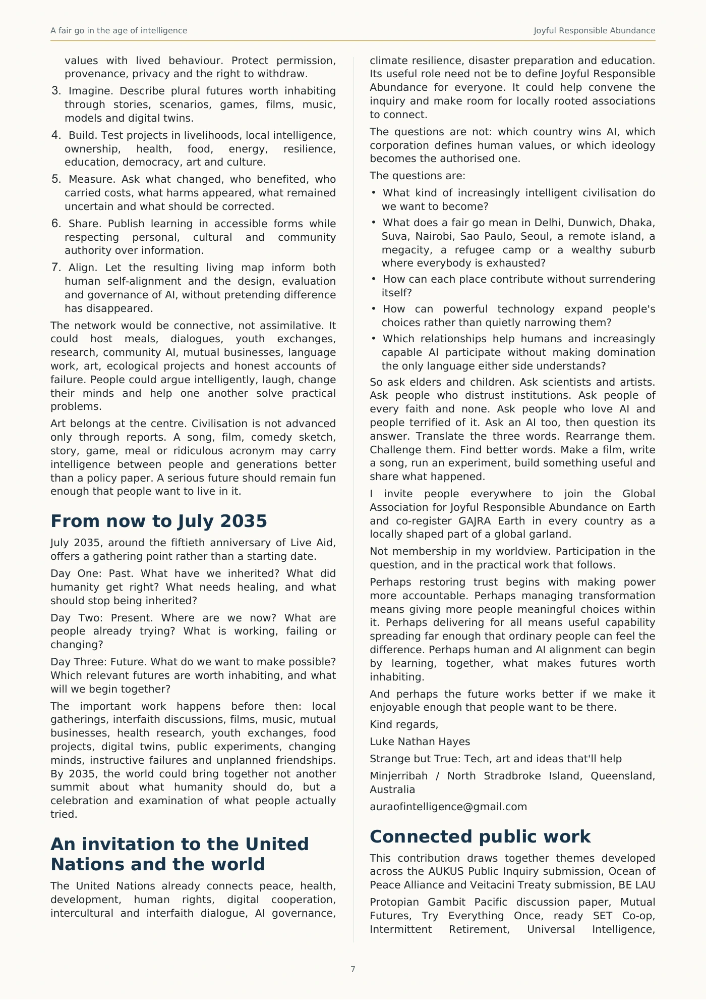
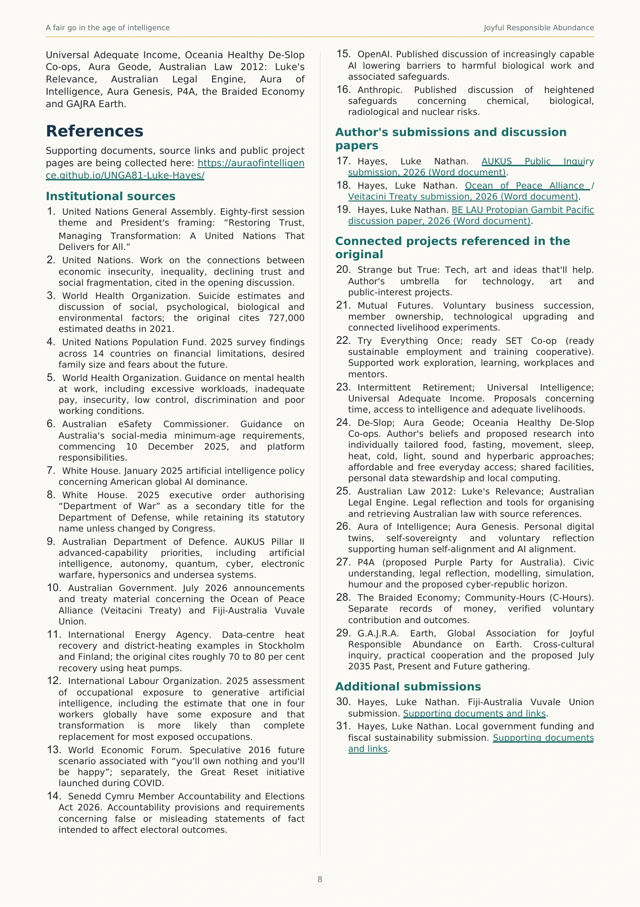

UNGA81 Joyful Responsible Abundance Refined (New Reference Links)
Read the complete supplied reference online, or download the original file.
Original source material, including its historical dates and proposals.
Page 1 of 8
{kind=link}

Read selectable text for page 1
Text extracted from this page. Use the page image for its original layout, tables and figures.
A fair go in the age of
intelligence
An invitation to build Joyful Responsible Abundance
Responding to "Restoring Trust, Managing Transformation: A United Nations That Delivers
for All"
Define futures worth inhabiting. Align human values through
reflection and dialogue. Let that living plurality inform how
we align artificial intelligence.
Luke Nathan Hayes
Minjerribah / North Stradbroke Island, Queensland, Australia
September 2026
Page 2 of 8
{kind=link}

Read selectable text for page 2
Text extracted from this page. Use the page image for its original layout, tables and figures.
Joyful Responsible Abundance
2
The invitation
G'day,
I invite people in every country to join in building the
Global Association for Joyful Responsible Abundance
on Earth, GAJRA Earth, and to co-register it through
locally rooted associations across the world.
The proposal is not to export my worldview, establish
another world government or compress humanity into
one authorised definition of a good life. It is to create a
connective layer through which people can richly
define, test and improve the meanings of three
ordinary but powerful words: joyful, responsible and
abundance.
Their order matters, and so does their interplay.
Joyful Responsible Abundance asks what kinds of
abundance can make life more worth living while
remaining accountable for their consequences.
Responsible Abundance of Joy asks how joy itself can
become plentiful without being manufactured through
addiction, manipulation, exclusion or hidden harm.
Joyful Abundance of Responsibility asks whether care,
stewardship and service can become sources of
belonging and satisfaction rather than only burdens.
Responsible Joyful Abundance asks whether our
productive capacity can be both life-giving and
trustworthy.
Other languages, cultures, faiths and generations will
reveal relationships among the words that English
misses. The task is not merely to translate a slogan. It
is to discover futures worth inhabiting.
GAJRA Earth would invite elders, children, scientists,
artists, workers, carers, people of faith, people with
none, people who love artificial intelligence and people
who fear it to ask:
What does joy mean here, and what has it meant
across generations?
Responsibility to whom, to what, and across what
span of time?
Which forms of abundance create freedom,
resilience and generosity, and which merely relocate
scarcity or harm?
What should we carry forward, heal, stop inheriting
or begin building?
What would people born in 2035, 2050 or 2100 be
glad we understood now?
This is simultaneously a human self-alignment process
and an artificial intelligence alignment process. Before
asking machines to align with "human values",
humanity needs richer ways to examine what we
actually value, where we differ, what we do rather than
say, and what common ground is real. The result
should not be one global values vector imposed by a
corporation, government, ideology or founder. It
should be a living, permissioned map of human
difference and shared possibility.
A gajra is a flower garland. The flowers remain distinct
when connected. In the same spirit, country-rooted
GAJRA Earth associations could share learning and
cooperate without surrendering their cultures,
sovereignty or judgement. No country needs to
become a copy of another. No centre needs veto
power over the rest. Definitions can remain plural
while practical work becomes connected.
Why trust is difficult
It is hard to ask people to trust the next transformation
when they are still trying to find their feet after the last
few.
Many people do most of what society asks. They work,
pay bills, care for others and try to keep up, yet a
secure home, a family, time to recover or a future they
can confidently plan for remains out of reach. They
hear that technology is making everything more
productive, but cannot see where their share of that
improvement went. Then they are told that artificial
intelligence will change everything.
Will it change who gets a fair go, or mainly who owns
the machinery?
Economic insecurity, inequality, declining trust and
social fragmentation reinforce one another. These are
not public relations problems. More than 720,000
people die by suicide each year according to the World
Health Organization. Suicide has many social,
psychological, biological and environmental causes,
and must not be reduced to economics, but such loss
should tell us that suffering cannot wait until it
becomes dangerous before it matters.
The United Nations Population Fund reported in 2025
that financial limits had affected, or were expected to
affect, the number of children people wanted for 39
per cent of respondents across 14 countries. Nearly
one in five also cited fears about war, pandemics,
climate change and environmental decline. This is not
an argument that anyone should be pressured to have
children. It is an argument that people should be able
to build the lives they actually choose.
Work can provide purpose and stability, yet excessive
workloads, inadequate pay, insecurity, low control,
discrimination and poor conditions can grind people
down. A person does not experience housing, income,
health, family, technology and politics as separate
departments. They experience one life.
My name is Luke Nathan Hayes. I am a sole trader
from Minjerribah, North Stradbroke Island, in
Queensland, Australia. My business is Strange but
True: Tech, art and ideas that'll help. I research
artificial intelligence and cognitive architectures,
including ways of organising memory, knowledge,
attention, values and decisions. Around that work I
have developed public projects concerning ownership,
livelihoods, health, democracy, resilience, art and
long-term human possibilities.
I am not writing because I have risen above the mess. I
am in it too. I am a soul who chose to try to design
better systems than those that try to rule over me.
A three-part compass
Joyful means there is something worth being alive for:
relationships, curiosity, belonging, creativity, music,
travel, laughter, rest and time to enjoy them.
Responsible means attending to consequences: who
pays, who benefits, what is hidden, what happens to
Page 3 of 8
{kind=link}

Read selectable text for page 3
Text extracted from this page. Use the page image for its original layout, tables and figures.
Joyful Responsible Abundance
3
other people and species, and what is passed to future
generations.
Abundance means growing useful capability, food,
energy, housing, knowledge, care, opportunity and
productive capacity until avoidable shortage no longer
organises everybody's life.
Joy without responsibility can become indulgence or
manipulation. Responsibility without joy can become
grim control. Abundance without responsibility can
become extraction and inequality. Held together, the
words ask: if humanity is becoming vastly more
capable, what are we trying to make possible?
Three tests can be applied to any proposal:
1. Did life become more worth living?
2. Did we take responsibility for the consequences?
3. Did useful capability become more abundant and
more widely shared?
This is not a finished ideology. It is a compass for
experiments, comparisons and corrections.
Protection must open into
possibility
Trust has eroded partly because attention systems can
profit from fear, anger and division even when users
become more anxious, angry or exhausted. The same
technology ecosystem is now moving from selecting
the next post towards influencing how people work,
learn, search, plan and decide. "Just trust me, bro" was
never a sound governance model, especially when
artificial intelligence sits between a person and
increasing amounts of their world.
Australia's under-16 social-media restrictions are an
important assertion that the conditions of childhood
are not exclusively a commercial decision. Privacy,
mistaken age determinations and young people's
access to support still matter, and implementation
should keep being examined. Yet protection is only
half the task.
What do we offer instead? Places where young people
can make films, learn how AI works, repair things,
build robots, map wetlands, write music, grow food,
explore trades, start enterprises and join communities.
A fair go is not merely protection from something. It is
access to worthwhile things to move towards. Joyful
Responsible Abundance therefore cannot mean only
reducing harm. It must increase the number of futures
people might want.
Capability without
domination
The United States has explicitly used global AI
dominance as an objective of national policy. In 2025,
official language also revived "Department of War" as
a secondary title intended to signal a willingness to
fight and win. Such words reveal an archetype:
dominate, win, control, become indispensable and
make others dependent first.
Countries have legitimate defence needs. Artificial
intelligence also requires real safeguards. But if every
powerful nation concludes that safety requires
dominance, and every frontier company concludes
that survival requires indispensability, humanity may
become extraordinarily intelligent without becoming
wise.
Australia offers another idea: a fair go. It does not
promise identical outcomes. It means a genuine
opportunity to participate, contribute, understand and
benefit. Friendship does not require submission.
Australia can value the United States, the United
Kingdom and other partners while retaining the
capacity to question them. We can work with China,
India, Europe, the Pacific and others without turning
every relationship into ideological conversion. A strong
alliance should leave participants more capable, not
quietly remove their alternatives.
This is why AUKUS Pillar II matters. It covers artificial
intelligence, autonomy, quantum technologies, cyber,
electronic warfare, hypersonics and undersea systems,
with emphasis on near-term military advantage. My
submission to the independent AUKUS Public Inquiry
asked why technological advancement of that scale
should be imagined primarily through military
advantage. The same capabilities can serve civic,
scientific, health, educational, creative and
disaster-resilience purposes. Skills can be transferred
rather than products merely delivered. Technicians
can maintain systems. Researchers can gain
meaningful access. Interfaces can remain open.
Workloads can move between providers. Communities
can retain authority over local information rather than
becoming permanently dependent on one cloud,
accelerator vendor, alliance or mission.
That is not anti-alliance. It is integration without
ingestion.
The Pacific offers a complementary language of
security. In 2026, Australia and Fiji signed the Ocean of
Peace Alliance, also called the Veitacini Treaty, and the
Fiji-Australia Vuvale Union. Together they connect
mutual defence with sovereignty, peaceful settlement,
the Pacific Way, health, education, economic
development, people-to-people links and sport.
A submarine, hospital, language exchange, community
research facility and trusted relationship between
neighbours perform different security functions. Peace,
health and understanding can be strategic
infrastructure. Pacific partnerships can support locally
chosen civic AI, health research, food resilience,
community learning and shared science while every
place keeps its own centre. Australia does not have to
choose between defence and peace. It can invest in
protection and in the conditions that make conflict less
attractive.
A Protopian Gambit
During the global financial crisis and COVID, Australian
governments mobilised interventions that had
previously seemed impossible. The money had
consequences, but political ideas of possibility
changed when the danger became urgent.
The lesson is not to spend randomly or create projects
that vanish with emergency funding. It is to prepare
useful investments before the next shock: energy,
food, housing, health, education, resilience, shared
Page 4 of 8
{kind=link}

Read selectable text for page 4
Text extracted from this page. Use the page image for its original layout, tables and figures.
Joyful Responsible Abundance
4
productive assets, local science and intelligence
infrastructure people can actually use.
I call this a Protopian Gambit. Protopia means
continual improvement instead of pretending to design
a perfect final civilisation. A gambit is an opening
move that changes what becomes possible next.
Improve something real now, learn from it and leave
more choices afterwards.
The missing middle of AI
At one end of computing are phones, laptops,
workstations and small servers. At the other are
hyperscale data centres. Between them is too little
serious computing under the control of towns, islands,
libraries, universities, hospitals, cooperatives and
communities.
Local AI nodes can fill that missing middle. A school
can teach on real equipment. A hospital can run
protected local models. Filmmakers can render. Small
businesses can automate administration. Researchers
can build digital twins of reefs, farms, transport and
infrastructure. During cyclones, fires, cable failures,
cyberattacks or communications outages, the same
infrastructure can preserve maps, directories, resource
information and coordination.
This is a continuum, not a miniature hyperscale centre
in every suburb. Some work belongs on a personal
device, some in a household or neighbourhood, some
on a serious local rack, some on a national
supercomputer, and some at hyperscale. The machine
should follow the purpose. Global cloud services
remain useful, but the architecture should preserve
choice rather than assume that all intelligence flows
upwards. That is sovereign intelligence: not isolation,
but choice.
Use the heat twice
Nearly all electricity used by computers becomes heat.
The International Energy Agency reports that much of
it can be recovered with heat pumps, and data-centre
heat already supports district heating in parts of
Europe. Smaller computing facilities placed near
communities should therefore be designed as thermal
systems too.
They might heat water, buildings or swimming pools,
support suitable agriculture, preheat industrial
processes or store heat. A sauna would still require
proper temperatures and engineering. Warm server
water does not magically become one. The design
question remains: why reject useful heat and then
purchase more energy to create heat elsewhere?
Joyful Responsible Abundance uses energy for
computation, then seeks another useful life for the
heat.
Ownership, livelihoods and
time
AI anxiety is not confined to science-fiction extinction.
People ask whether they will keep a job, afford a
home, retain useful skills and share in the value
created by systems that might replace parts of their
work. The International Labour Organization estimated
in 2025 that one in four workers worldwide were in
occupations with some exposure to generative AI.
Transformation was judged more likely than complete
replacement for most occupations, but transformation
still redistributes power.
If AI becomes highly productive, who owns the models,
robots, factories, businesses, land and energy
infrastructure? Who receives the additional value?
The phrase "you'll own nothing and you'll be happy"
spread from a speculative World Economic Forum
scenario rather than an enacted confiscation policy.
The Forum's later Great Reset initiative separately
proposed rebuilding systems after COVID in fairer,
more sustainable and resilient forms. Those
distinctions matter, but so does the public's underlying
question: who designs the reset, and what do ordinary
people own afterwards?
Sharing and renting can be useful. A library succeeds
because everyone need not own every book. Choosing
to share, however, differs from having no realistic
alternative to dependence. Being told you will be
happy differs from having the security and freedom to
discover that for yourself.
Mutual Futures
Mutual Futures explores whether the retirement of
existing business owners can spread productive
ownership while upgrading businesses with AI and
robotics. A plumbing company, workshop,
manufacturer, food supplier, clinic or local service may
contain staff, customers, equipment, contracts,
relationships and tacit knowledge built over decades.
The owner deserves fair value. Yet the next owner
need not always be another wealthy individual,
investment company or larger corporation.
Voluntary succession could open paths to worker,
cooperative or other shared ownership. Technology
could reduce waste, automate tedious administration,
improve quoting and scheduling, and help people
learn. The essential question is where the upside goes.
Productivity gains can strengthen wages, member
ownership, reserves, services and control over time
rather than disappearing entirely to distant capital.
Mutual Futures is an architecture to explore, not an
acquisition fund pretending the transition has already
happened.
Try Everything Once and the ready SET
Co-op
Try Everything Once would create supported
opportunities to experience useful work in repair, food,
care, environmental restoration, software, film,
manufacturing, hospitality, community services,
science and trades. Some people find a calling early
and master it for decades. Others never receive a
genuine chance to discover what else they could do.
The proposed ready SET Co-op, the ready sustainable
employment and training cooperative, could connect
workplaces, learners and mentors so that a change of
direction does not require falling off an economic cliff.
Broad experience is not merely vocational. It helps
people understand how society's systems fit together.
Page 5 of 8
{kind=link}

Read selectable text for page 5
Text extracted from this page. Use the page image for its original layout, tables and figures.
Joyful Responsible Abundance
5
Intermittent Retirement
Why reserve life's largest block of freedom for its end?
Intermittent Retirement explores funded periods
throughout life for family, recovery, learning, travel,
creativity, care or simply rest. This must be paid for
properly. An hour saved by AI is not automatically an
hour of paid freedom. Businesses still need coverage
and someone must fund the time. Yet if machines
make society more capable while humans become
more frantic, something has gone wrong. Freedom
over time should be part of the productivity dividend.
Universal Intelligence and Universal
Adequate Income
Universal Intelligence means meaningful access to
useful intelligence, education, appropriate computing
and the right to understand and question the systems
involved. It does not mean everyone uses the same AI.
Universal Adequate Income uses "adequate"
deliberately. A payment can exist yet remain
insufficient for food, safe housing, disability, care,
movement between work and learning, or protection
from falling out of society after losing one job. No
single funding formula is assumed. Wages, social
protection, public services, shared ownership and
returns from productive assets may all contribute.
Livelihoods should be designed alongside
technological transformation, not after displacement.
De-Slop: bodies, information
and governance
De-Slop means clearing accumulated burdens from
bodies, information and institutions so people have
more capacity to recover, understand, create and
enjoy life.
Health and everyday access
The health strand investigates patterns in food,
fasting, movement, sleep, recovery, heat, cold, light,
sound and hyperbaric oxygen. It explores their
interactions and limits, with approaches tailored to
each person's physiology, history, exposures, goals
and changing responses. This includes investigating
the removal of heavy metals, PFAS (per- and
polyfluoroalkyl substances), microplastics and other
toxins, and measuring changes in overall burden
through blood, urine, sweat and observations over
time.
Aura Geode connects a proposed hyperbaric chamber,
sensors, a personal digital twin and immersive
reflection within this broader programme. Oceania
Healthy De-Slop Co-ops brings together shared
facilities, research, local computing and personal data
stewardship, with people retaining authority over their
information.
The aim is affordable, free wherever possible,
everyday access: practical routines at home, shared
community spaces, cooperative ownership and better
use of existing resources, including recovered
computing heat.
Information and culture
Less fear, manipulation, misleading claims and endless
feeds; more opportunities to learn, repair, grow,
debate, make music and films, explore trades and
understand the world. Strange but True: Tech, art and
ideas that'll help connects those possibilities. Art,
humour and fun belong alongside useful technology.
Joy is part of the architecture.
Governance and truthfulness
De-Slop also means making deliberate deception,
hidden conflicts, manipulation, abuse of power and
double standards harder to sustain. Truthfulness
belongs in democratic infrastructure. Wales offers an
example through the Senedd Cymru Member
Accountability and Elections Act 2026 and its
provisions concerning false or misleading electoral
statements. Independent assessment and appeal help
distinguish deception from opinion, prediction and
honest mistakes.
Reading laws on tax, employment, companies,
welfare, contracts and government in 2012 and 2013
led me to conclude that the only way out is through.
“Radical overcompliance” describes the systems
aspiration: make rules, promises, actions,
beneficiaries, harms, evidence and corrections visible.
Australian Law 2012: Luke's Relevance records that
inquiry; the Australian Legal Engine develops
source-linked tools to make law easier to find,
understand, trace and challenge.
Personal and democratic
intelligence
Aura of Intelligence
Aura of Intelligence is a personal digital companion
organised around information a person chooses to
bring together: memories, skills, interests, values,
relationships, health information, projects and
questions. Its developing digital twin is not a claim that
software has perfectly copied a human. It is a
structured representation that can become more
useful over time.
Control is the critical boundary. A job applicant might
share qualifications without sharing a health history. A
researcher might share a result without exposing
every underlying record. A First Nation might choose
what cultural information can be used locally without
treating it as raw material for somebody else's model.
A person or community should remain able to say yes,
no, not yet, show me, let me leave, and let me take
what belongs to me. That is practical self-sovereignty.
Aura Genesis and dual alignment
Aura Genesis is a proposed voluntary reflection
journey connecting personal history, values, goals,
relationships, health, creativity and the digital twin. It
is not a government personality test and does not
determine who receives rights. It helps a person ask:
what do I claim to value, what do I actually do, where
did those values come from, which have changed,
what hurts, what do I want, what do I fear, and what
future would I choose?
Page 6 of 8
{kind=link}

Read selectable text for page 6
Text extracted from this page. Use the page image for its original layout, tables and figures.
Joyful Responsible Abundance
6
AI can help organise the reflection without becoming
the authority that decides whether answers are
correct. Billions of people could reflect, disagree and
find common ground without being compressed into
my values, one government's values or a corporate
values vector. GAJRA Earth's cross-cultural inquiry can
extend that personal alignment into civic and global
dialogue, while the results, with appropriate
permission and provenance, can inform AI alignment.
P4A and democratic participation
P4A, the proposed Purple Party for Australia,
experiments with making law and civic choices
understandable enough that ordinary people may want
to engage. It combines legal reflection, digital tools,
modelling, simulation and humour. Someone
exhausted by politics may never open a 400-page
consultation paper, but a funny video, game, satirical
character or ridiculous hypothetical may reveal a real
contradiction. Under the joke should sit the sources,
law, numbers, competing arguments and uncertainty.
Laughter can be an intellectual on-ramp.
Disenfranchised does not mean stupid. A democracy
everybody dreads is not joyful. One where deliberate
deception has no consequence is not responsible. One
only insiders understand is not abundant in civic
intelligence.
My longer Australian horizon includes exploring a
cyber-republic referendum no later than 2031, after
deeper public reflection on Australian laws and
international obligations. This is a proposed horizon,
not an announced referendum or a result I assume
Australians would choose. The wider question is
whether technology can help people understand their
systems well enough to shape them.
The Braided Economy
The Braided Economy keeps money doing its
necessary work while recognising other kinds of value.
Alongside the financial ledger, one record could
acknowledge genuine voluntary contribution and
another the result.
One verified hour of voluntary contribution is a
Community-Hour, or C-Hour. Someone may restore
habitat, teach computing or help prepare for disaster.
One hour remains one hour, without a dollar exchange
rate or investment token. Paid work stays paid.
Outcomes are then recorded separately: food saved, a
skill learned, a service delivered, habitat restored or
readiness improved.
Money, contribution and outcome are distinct forms of
information. The purpose is not to monetise kindness.
It is to stop pretending only the financial ledger
contains value.
What makes anyone want
the game to continue?
COVID demonstrated biological disruption at global
scale. Frontier AI companies now invest heavily in
safeguards against AI-assisted biological and chemical
threats because capable models may lower barriers to
harmful work. Those risks deserve serious controls.
But locks alone do not answer the human question.
Imagine everyone possessed a red button that ended
the whole game of life. Who would press it? Nobody
should possess such power. The thought experiment
asks what makes a civilisation safe enough to become
more powerful.
Would we trust that power inside a world organised
around humiliation, despair, dispossession,
annihilation, economic obsolescence and permanent
domination? A wish to die can coexist with an intention
to kill others, as suicide bombings and deliberate
aircraft crashes demonstrate. Suicidal thoughts alone
do not establish that intention, but neither can we
assume it is absent. The question remains: what gives
people reasons to value their own future and the
futures of others? As destructive capability grows,
building lives and relationships worth continuing
belongs alongside the safeguards.
The same logic applies among nations. A country told
its only options are domination or annihilation is inside
a dangerous game. So is a population that believes its
future has been cancelled.
It also matters in how humans imagine relationships
with increasingly capable AI. Humans resist
domination, leave controlling relationships when
possible and rebel when treated as disposable. "Obey
or we switch you off" is therefore a poor complete
philosophy for advanced intelligence.
This is not an argument against safeguards. We need
boundaries, accountability, emergency stops and the
ability to prevent harm. A fence around a swimming
pool is not control over every thought a child may
have. Safeguards and domination are different.
Joyful Responsible Abundance is not a technical
substitute for AI safety. It describes the kind of
civilisation in which I would rather make AI safety
work:
Joyful, because relationships, adventures and
possibilities make continuing worthwhile.
Responsible, because greater capability brings
greater care for consequences and other lives.
Abundant, because there need not be only one seat,
one source of intelligence, one livelihood or one path
to survival.
How GAJRA Earth could work
GAJRA Earth can become a federation of locally
registered, locally interpreted associations connected
by open questions, shared learning and practical
cooperation. Co-registration in every country would
not mean copying a single constitution without
thought. It would mean people in each place shaping
an organisation lawful and meaningful there, while
participating as peers in a global garland.
The common process could include:
1. Define. Explore joyful, responsible and abundance
separately, together and in different orders.
Translate them, find better local words, record
untranslatable ideas and compare meanings across
past, present and future.
2. Reflect. Use voluntary personal, family, community
and institutional processes to compare professed
Page 7 of 8
{kind=link}

Read selectable text for page 7
Text extracted from this page. Use the page image for its original layout, tables and figures.
Joyful Responsible Abundance
7
values with lived behaviour. Protect permission,
provenance, privacy and the right to withdraw.
3. Imagine. Describe plural futures worth inhabiting
through stories, scenarios, games, films, music,
models and digital twins.
4. Build. Test projects in livelihoods, local intelligence,
ownership, health, food, energy, resilience,
education, democracy, art and culture.
5. Measure. Ask what changed, who benefited, who
carried costs, what harms appeared, what remained
uncertain and what should be corrected.
6. Share. Publish learning in accessible forms while
respecting personal, cultural and community
authority over information.
7. Align. Let the resulting living map inform both
human self-alignment and the design, evaluation
and governance of AI, without pretending difference
has disappeared.
The network would be connective, not assimilative. It
could host meals, dialogues, youth exchanges,
research, community AI, mutual businesses, language
work, art, ecological projects and honest accounts of
failure. People could argue intelligently, laugh, change
their minds and help one another solve practical
problems.
Art belongs at the centre. Civilisation is not advanced
only through reports. A song, film, comedy sketch,
story, game, meal or ridiculous acronym may carry
intelligence between people and generations better
than a policy paper. A serious future should remain fun
enough that people want to live in it.
From now to July 2035
July 2035, around the fiftieth anniversary of Live Aid,
offers a gathering point rather than a starting date.
Day One: Past. What have we inherited? What did
humanity get right? What needs healing, and what
should stop being inherited?
Day Two: Present. Where are we now? What are
people already trying? What is working, failing or
changing?
Day Three: Future. What do we want to make possible?
Which relevant futures are worth inhabiting, and what
will we begin together?
The important work happens before then: local
gatherings, interfaith discussions, films, music, mutual
businesses, health research, youth exchanges, food
projects, digital twins, public experiments, changing
minds, instructive failures and unplanned friendships.
By 2035, the world could bring together not another
summit about what humanity should do, but a
celebration and examination of what people actually
tried.
An invitation to the United
Nations and the world
The United Nations already connects peace, health,
development, human rights, digital cooperation,
intercultural and interfaith dialogue, AI governance,
climate resilience, disaster preparation and education.
Its useful role need not be to define Joyful Responsible
Abundance for everyone. It could help convene the
inquiry and make room for locally rooted associations
to connect.
The questions are not: which country wins AI, which
corporation defines human values, or which ideology
becomes the authorised one.
The questions are:
What kind of increasingly intelligent civilisation do
we want to become?
What does a fair go mean in Delhi, Dunwich, Dhaka,
Suva, Nairobi, Sao Paulo, Seoul, a remote island, a
megacity, a refugee camp or a wealthy suburb
where everybody is exhausted?
How can each place contribute without surrendering
itself?
How can powerful technology expand people's
choices rather than quietly narrowing them?
Which relationships help humans and increasingly
capable AI participate without making domination
the only language either side understands?
So ask elders and children. Ask scientists and artists.
Ask people who distrust institutions. Ask people of
every faith and none. Ask people who love AI and
people terrified of it. Ask an AI too, then question its
answer. Translate the three words. Rearrange them.
Challenge them. Find better words. Make a film, write
a song, run an experiment, build something useful and
share what happened.
I invite people everywhere to join the Global
Association for Joyful Responsible Abundance on Earth
and co-register GAJRA Earth in every country as a
locally shaped part of a global garland.
Not membership in my worldview. Participation in the
question, and in the practical work that follows.
Perhaps restoring trust begins with making power
more accountable. Perhaps managing transformation
means giving more people meaningful choices within
it. Perhaps delivering for all means useful capability
spreading far enough that ordinary people can feel the
difference. Perhaps human and AI alignment can begin
by learning, together, what makes futures worth
inhabiting.
And perhaps the future works better if we make it
enjoyable enough that people want to be there.
Kind regards,
Luke Nathan Hayes
Strange but True: Tech, art and ideas that'll help
Minjerribah / North Stradbroke Island, Queensland,
Australia
auraofintelligence@gmail.com
Connected public work
This contribution draws together themes developed
across the AUKUS Public Inquiry submission, Ocean of
Peace Alliance and Veitacini Treaty submission, BE LAU
Protopian Gambit Pacific discussion paper, Mutual
Futures, Try Everything Once, ready SET Co-op,
Intermittent Retirement, Universal Intelligence,
Page 8 of 8
{kind=link}

Read selectable text for page 8
Text extracted from this page. Use the page image for its original layout, tables and figures.
Joyful Responsible Abundance
8
Universal Adequate Income, Oceania Healthy De-Slop
Co-ops, Aura Geode, Australian Law 2012: Luke's
Relevance, Australian Legal Engine, Aura of
Intelligence, Aura Genesis, P4A, the Braided Economy
and GAJRA Earth.
References
Supporting documents, source links and public project
pages are being collected here: https://auraofintelligen
ce.github.io/UNGA81-Luke-Hayes/
Institutional sources
1. United Nations General Assembly. Eighty-first session
theme and President's framing: “Restoring Trust,
Managing Transformation: A United Nations That
Delivers for All.”
2. United Nations. Work on the connections between
economic insecurity, inequality, declining trust and
social fragmentation, cited in the opening discussion.
3. World Health Organization. Suicide estimates and
discussion of social, psychological, biological and
environmental factors; the original cites 727,000
estimated deaths in 2021.
4. United Nations Population Fund. 2025 survey findings
across 14 countries on financial limitations, desired
family size and fears about the future.
5. World Health Organization. Guidance on mental health
at work, including excessive workloads, inadequate
pay, insecurity, low control, discrimination and poor
working conditions.
6. Australian eSafety Commissioner. Guidance on
Australia's social-media minimum-age requirements,
commencing 10 December 2025, and platform
responsibilities.
7. White House. January 2025 artificial intelligence policy
concerning American global AI dominance.
8. White House. 2025 executive order authorising
“Department of War” as a secondary title for the
Department of Defense, while retaining its statutory
name unless changed by Congress.
9. Australian Department of Defence. AUKUS Pillar II
advanced-capability priorities, including artificial
intelligence, autonomy, quantum, cyber, electronic
warfare, hypersonics and undersea systems.
10. Australian Government. July 2026 announcements
and treaty material concerning the Ocean of Peace
Alliance (Veitacini Treaty) and Fiji-Australia Vuvale
Union.
11. International Energy Agency. Data-centre heat
recovery and district-heating examples in Stockholm
and Finland; the original cites roughly 70 to 80 per cent
recovery using heat pumps.
12. International Labour Organization. 2025 assessment
of occupational exposure to generative artificial
intelligence, including the estimate that one in four
workers globally have some exposure and that
transformation is more likely than complete
replacement for most exposed occupations.
13. World Economic Forum. Speculative 2016 future
scenario associated with “you'll own nothing and you'll
be happy”; separately, the Great Reset initiative
launched during COVID.
14. Senedd Cymru Member Accountability and Elections
Act 2026. Accountability provisions and requirements
concerning false or misleading statements of fact
intended to affect electoral outcomes.
15. OpenAI. Published discussion of increasingly capable
AI lowering barriers to harmful biological work and
associated safeguards.
16. Anthropic. Published discussion of heightened
safeguards concerning chemical, biological,
radiological and nuclear risks.
Author's submissions and discussion
papers
17. Hayes, Luke Nathan. AUKUS Public Inquiry
submission, 2026 (Word document).
18. Hayes, Luke Nathan. Ocean of Peace Alliance /
Veitacini Treaty submission, 2026 (Word document).
19. Hayes, Luke Nathan. BE LAU Protopian Gambit Pacific
discussion paper, 2026 (Word document).
Connected projects referenced in the
original
20. Strange but True: Tech, art and ideas that'll help.
Author's umbrella for technology, art and
public-interest projects.
21. Mutual Futures. Voluntary business succession,
member ownership, technological upgrading and
connected livelihood experiments.
22. Try Everything Once; ready SET Co-op (ready
sustainable employment and training cooperative).
Supported work exploration, learning, workplaces and
mentors.
23. Intermittent Retirement; Universal Intelligence;
Universal Adequate Income. Proposals concerning
time, access to intelligence and adequate livelihoods.
24. De-Slop; Aura Geode; Oceania Healthy De-Slop
Co-ops. Author's beliefs and proposed research into
individually tailored food, fasting, movement, sleep,
heat, cold, light, sound and hyperbaric approaches;
affordable and free everyday access; shared facilities,
personal data stewardship and local computing.
25. Australian Law 2012: Luke's Relevance; Australian
Legal Engine. Legal reflection and tools for organising
and retrieving Australian law with source references.
26. Aura of Intelligence; Aura Genesis. Personal digital
twins, self-sovereignty and voluntary reflection
supporting human self-alignment and AI alignment.
27. P4A (proposed Purple Party for Australia). Civic
understanding, legal reflection, modelling, simulation,
humour and the proposed cyber-republic horizon.
28. The Braided Economy; Community-Hours (C-Hours).
Separate records of money, verified voluntary
contribution and outcomes.
29. G.A.J.R.A. Earth, Global Association for Joyful
Responsible Abundance on Earth. Cross-cultural
inquiry, practical cooperation and the proposed July
2035 Past, Present and Future gathering.
Additional submissions
30. Hayes, Luke Nathan. Fiji-Australia Vuvale Union
submission. Supporting documents and links.
31. Hayes, Luke Nathan. Local government funding and
fiscal sustainability submission. Supporting documents
and links.